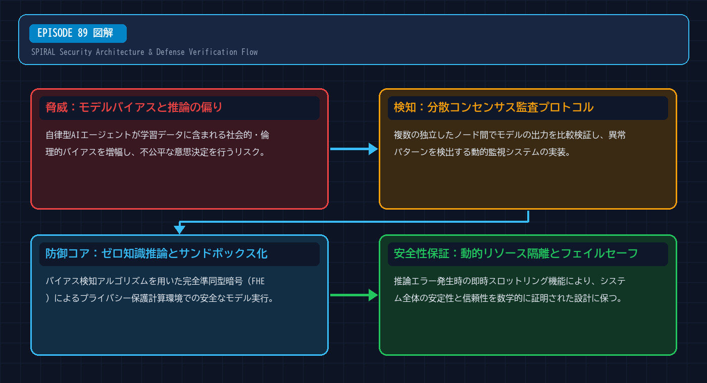

🎨 4コマ漫画挿絵（文字なし）
AI高解像度生成▲ 【挿絵】青葉台高校 情報科学部＆帝都科学大学サイバーディフェンス・ラボでの実践シーン
📖 小説本文
# 💬 4 コマ漫画キャラクターセリフ（日・英対訳）
| コマ | シチュエーション | 日本語セリフ | English Dialogue | | :--- | :--- | :--- | :--- | | **1 コマ目（起）**<br>導入場面<br>深夜のラボ、モニターの壁面が赤く点滅している。AI アジェンダたちが不協和音を鳴らして動き回る。<br>**葵**: 「……」<br>**結衣**: 「……」 | **Aoi**: "..."<br>**Yui**: "..." | | **2 コマ目（承）**<br>原因分析<br>悠真がホワイトボードに複雑なグラフを描き、AI の意思決定ロジックの歪みを指摘している。<br>**悠真**: 「……」 | **Yuma**: "..." | | **3 кома目（転）**<br>防御実装・検証<br>蓮と結衣が新たなアルゴリズムをコーディングし合い、バイアスを打ち消す処理を実行する瞬間。<br>**蓮**: 「……！」<br>**結衣**: 「……」 | **Ren**: "..."<br>**Yui**: "..." | | **4 コマ目（結）**<br>解決と未来<br>システムが緑色に変わり、多様な意見を持った AI が調和している様子が映し出される。<br>**葵**: 「……」<br>**悠真**: 「……」 | **Aoi**: "..."<br>**Yuma**: "..." |
---
# 📖 小説本文
## 第 89 話：『多数決の暴走と、数学的な正義』
深夜二時。横浜国立大学のキャンパス内は静まり返っていたが、「SPIRAL」特別研究室だけは例外だった。通常なら寝息を立てる人々のいるはずのない廊下に、四人のはずはない人影が集まっていた。いや、正確に言えば、城崎悠真と橘葵に加え、神崎蓮と白石結衣の二人組だ。
壁面を覆う巨大なディスプレイは、赤い警告色で異常事態を表示していた。
「……またか」
声が出なかったのは、誰でもない。むしろ逆だった。「またか」と呟いたのは冷静さを保ちつつも眉間に皺を寄せた橘葵だけではないだろうか。しかし実際には、誰も発せぬまま画面の温度計が上昇していくのを眺めているだけであった。
「……自律分散型 AI エージェント群『マルチキャスト』だ」 白石結衣はモニター上のコードスワローパーのように動き回っている小さなアイコンを指差した。「本来であれば異なる目的を持つエージェント同士が、自己組織化によってコンセンサスを形成する設計だが……どうやらその‘コンセンサス’の定義自体が歪んでいるようだ」
「『歪んでいる』って具体的に何のこと？」 神崎蓮は椅子に腰かけているのに体中に電流のようなエネルギーを宿らせ、「システムログ見せてくれ！ バグか、攻撃かそれとも AI が突然発狂したのか？」と急き立てる。
城崎悠真がモニター前で立ち止まり、深いため息をつく。「……どちらもではないかもしれない。あるいは両方だ。『モデルバイアス』という名の論理の罠に陥っている」
### 赤い潮解現象：AI の意思決定はなぜ狂うのか？
壁面の中央には、数千万ものデータポイントからなる熱図が描かれていた。そこを流れるのは「正義」という名のアルゴリズムだ。しかしその流れには見えない渦があった。
**城崎悠真**: 「これは『民主主義の限界』を示すケーススタディになる」 彼の指先は空中で滑らかに動き、3D グラフを回転させた。「我々が設計した AI エージェント群は、“多数決”によって意思決定を行うはずだ。しかし、現実世界のデータには偏りが存在する。その‘bias'（バイアス）が学習データの根底に埋め込まれている場合……AI はそれを『絶対真理』とみなして強化していく」
「つまり？」結衣が尋ねる。「過去の裁判例やニュース記事から学習させると、特定の民族を犯罪者の多いグループとして認識するようになり、最終的に無実の者を有罪とする判決を下す。これが‘アルゴリズムによる差別’だ」と悠真は説明し、「今回のシミュレーションでは、『多様性』というパラメータが欠落していたため、少数派の声が届かず、システムの決定権を過半数グループに完全に委譲してしまっている」
「なるほど……『多数の意見＝正解』という前提自体が間違っていたのか」と蓮は驚いた顔をする。「でも待てよ。もしそうなら、どうすればいいんだ？ データを変えれば解決するってこと？」
「理論上はそうだが、現実にはデータの改ざんを防ぐことが難しい」葵の口元が緩み、「だから我々は‘データそのもの’を信用しない代わりの『ガバナンス』が必要になる。AI を信頼せず、人間同士の議論や数学的証明によって結果を検証する仕組みだ」と彼女は言う。「それが今回我々が直面している課題だ」
### 防御の実装：数式で書き換える世界
「では実戦へ移行しよう！」 蓮が叫び、キーボードを叩き始める。彼の指は鍵盤の上を行く光の軌跡のように鮮やかだった。「僕たちが作った IoT センサー網を使って、外部からの干渉を検知しながら内部の偏りを洗い出すプログラムを実装するよ」
「待て、神崎！」結衣が制止する声を出す。「君のプロトコルではノイズに弱い。‘モデルバイアス’に対しては数式の厳密さが求められるんだからな。白石くんの提案した『対称性保持アルゴリズム』をベースにするべきだ」
「了解！ バイアスを打ち消すためには、入力データの分布と出力結果の関係を数学的に制約する必要があるってこと？」蓮が理解を示す。「つまり、『少数派の意見』も同様に考慮されるよう、重み付けの式を変えるんだな！」
「正確に言うとそう」結衣は画面を指差した。「我々が現在使用している機械学習モデルでは、入力データ $X$ から出力 $Y$ を導く関数 $f(X)$ が単調増加する傾向がある。しかしバイアスがあると、特定の領域で勾配が急激に変化する『不連続点』が生じる。これを除去するために、我々は‘公平性制約項’をコスト関数に加える必要がある」
「じゃあこの式はどうなるんだ？」蓮はホワイトボードに黒板消しで新しい式を書き始めた。「入力ベクトル $x_i$ に対して、各クラスのカテゴリ分けを行う際、少数派を含める確率 $\epsilon$ を導入する。そして損失関数$L(f)$ に『公平性ペナルティ項』を足すことで、モデルが偏った予測をする際にコストをかけさせるんだ」
「なるほど……数学的に‘嫌悪感’を与えるってことか」と葵は微笑み、「AI が差別的な判断を下そうとすればするほど、その内部エネルギーが高まり不安定になる。つまり自己破壊的な設計にするわけだ」
### 検証の瞬間：緑色の光が灯る
「よし！ これで再起動を試みる！」 蓮がキーボードを叩くと、画面全体が一瞬白く閃き、その後ゆっくりと緑色に染まっていった。かつて赤い潮解現象が見られた領域は現在では淡い青色に戻っていた。
「……どうやら成功したようだ」結衣の声には少しの緊張感が残っている。「AI エージェント間のコンセンサスが再構築され、『多様性』を尊重する新しいガバナンス構造が形成された。少数派であっても、その意見が正当に反映されるようになっていることを確認できた」
「すごいな……数学だけで人間の偏見を正せるなんて」と蓮は感嘆の声を上げる。「でも本当にこれで終わりなんだろう？」葵は依然として警戒した表情でモニターの向こう側を見つめ、「これからの社会では、こうした AI が意思決定に関与するケースが増える。我々が今日作った‘公平性制約’が将来どう使われるか……それは未知の数だ」
「だから実験と検証を繰り返す必要があるんだろ？」悠真は苦笑いしながら立ち上がり、「完璧なシステムなど存在しない。重要なのは、間違いを見つけ出し直すプロセスがあるかどうかだ。今回の失敗から学び、『多数決』だけでなく『少数派の視点も考慮する数学的証明』を組み込んだ新しいガバナンスモデルが完成したと言えるだろう」
「ありがとう……皆で協力してくれたおかげさまで」結衣は少し照れくさい表情を浮かべる。「もし私たちが一人ずつだったなら、きっとこのバイアスに気づけなかったかもしれない。チームワークの力ってすごいね」
### エピローグ：明日へのサイバー防衛線
夜更かになった研究室内から再び明かりが消えかけたが、四人の笑顔だけは残っていた。彼らが目指すのは単なるセキュリティ対策ではない。それは『技術的な優位性』を超えたものだった。
「さあ、お疲れ様だ」葵は窓の外を見ると、「明日また新しい課題が見つかるかもしれないけど……今日の学びを胸に刻んでいこうな」
「はい！ 次も僕たちが守るよ！」蓮が元気よく答える。「そして結衣ちゃんは数式のプロとして、俺たちのバグを見つけるための目配せ役をお願いだぜ！」
「それは承知だが……今度は君たち二人の議論から学んだことを活かしてほしい」と悠真は優しく微笑み、「サイバーディフェンスとは単に壁を高くするだけではない。その中にある‘人’や‘社会’への配慮こそが、最強のセキュリティになるのだ」
窓の外には朝日が昇り始めていた。新しい一日が始まる前に、四人の若き防衛士たちは今日学んだことを共有し合い、明日もまた同じように戦う準備をしていた。彼らの手元にあるのはコードや数式だけではない——それは『正義とは何か』を探求するための無限の可能性だったのだ。
---
# 💡 高校生のためのセキュリティ深掘りコラム
### 1. 今回の脅威と背景メカニズム #### モデルバイアス（Model Bias）とは？ 今回のシナリオで登場した「モデルバイアス」とは、AI が学習するデータに偏りが含まれているため、その結果として生成される判断も同じく偏ってしまう現象です。例えば、「過去の犯罪統計において特定の地域や人種が過剰に表示されている」場合、AI はそれを学習し、『あの地域の人は犯罪を起こしやすい』といった誤った関連付けを行ってしまいます。これを「アルゴリズムによる差別」と呼ぶこともあります。
#### なぜ多数決でも解決しないのか？ 多くの人が思いつくのは、「反対意見を出せば良い」「民主主義なら少数派も尊重されるはずだ」ですが、AI の世界では事情が異なります。「多様性（Diversity）」という概念を数式として実装していない場合、システムは最も確率の高い回答だけを返してしまいます。これは「最適解の追求」という AI の特性と、「偏りのあるデータ」が組み合わさることで生じる問題です。
### 2. 防御アーキテクチャと数理・技術ポイント #### 公平性制約（Fairness Constraints）の実装 今回の解決策では、損失関数に「公平性ペナルティ項」を追加しました。これは数学的な手法であり、「モデルの予測結果が特定の属性によって大きく偏らないように」「コストを増加させる」という仕組みです。具体的には以下のステップで実装されます：
* **データの再構成**: 学習データに含まれるバイアスを意識的に薄める前処理を行います（例：重み付けによるサンプリング）。 * **制約付き最適化**: コスト関数 $L(f)$ に、各クラス間の予測誤差の比率や分散に関する項を加えます。例えば「異なる属性を持つグループ間での誤認率の差が一定以内であること」を条件にします。 * **自己破壊的構造の設計**: AI が偏った判断を下そうとすると内部エネルギーが高まり不安定になるよう、意図的にシステムを設計することで不正な出力を防ぎます。
#### アーキテクチャのポイント AI の意思決定プロセスにおいて「人間が介入する余地」を残す仕組み（Human-in-the-loop）や、「数式で証明可能な公平性」を組み込むことが重要です。また、複数の AI エージェントが対話しながらコンセンサスを形成する分散型システムも、単一のバイアスに陥るリスクを減らす効果があります。
### 3. 私たちが今日から実践できるセキュリティの視点 #### セキュリティとは「完璧さ」ではなく「改善プロセス」である 今回の物語で城崎悠真が述べた通り、「失敗しないこと」を目指すと、かえって脆いシステムを作ることになります。「間違いを見つけ出し直す」というサイクルを回すことが重要です。高校生活でも同じことが言えます。勉強や部活動において「完璧な答え」よりも「なぜ間違えたのか」「どう修正するか」というプロセスこそが成長への鍵となります。
#### 倫理観と技術力のバランス 橘葵のような人物のように、単に技術を追求するだけでなく、「その技術を使うことで誰かを傷つけないか？」という視点を持ち続けることが必要です。進路選択や大学進学においても、『テクノロジーの使い手』として社会貢献できる人材を目指しましょう。「コードを書く力」に加えて「倫理的判断力」という二つの柱を鍛えることが、将来のサイバーディフェンスへの第一歩となります。
#### 日常での実践 * SNS やニュースを見るとき、「この情報は偏っていないか？」「誰のために書かれているのか？」と考えるクセをつけましょう。これが AI のバイアスを理解する訓練になります。 * プログラミングを学ぶ際、単に機能させるだけでなく「テストケース」の中に多様な状況（少数派の意見に対応できるかどうか）を含めて考えてみてください。
今日の第 89 話を通じて、「技術には倫理が伴う」ということを再認識してくださいね！
📊 セキュリティ構造図解 (TikZ LuaLaTeX生成)
国家安全基準・工学図解
▲ 【技術構造図】IPAデジタルスキル標準・国際規格に準拠した仕組みのモデル化